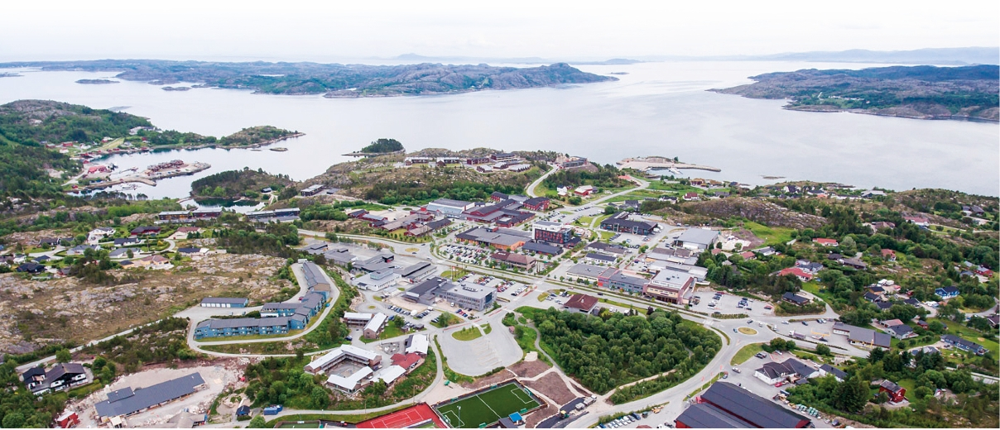

Berge Rederi på Hitra:
Ungdommelig tiltak
i maritim tradisjon
På 21 år har brødrene Magne og Øivind Berge med støtte i faren Oddvar bygd opp et rederi på Hitra
som i dag hevder seg blant de største norske i nærsjøfarten, med ni moderne selvlossere i fart over
hele Nord-Europa. Det er et familierederi med røtter i øyriket ytterst i Sør-Trøndelag, og i et dis-
trikt som har opplevd stor nyskapning innen havbruk og skipsfart de siste tiårene.
•••
Av Dag Bakka jr. dag@kystrederiene.no
Dette er et foretak fundert på en
sterk maritim kultur fra fiskeri og
føring, lokalisert til Hitra lengst sør i
Trøndelag. Hitra er den største øya
sør for Lofoten og er som et Norge i
miniatyr, med variert topografi, flora
og dyreliv, med syv tusen større og
mindre vann og med høyeste topp på
345 meter. I nordøst ligger tettstedet
Fillan med Fjellværsøya og Ulvøya
utenfor. Og slår vi sirkelen litt videre,
får vi Frøya som nabo i nord, Stor-
fosna og Ørlandet i øst og Frohavet i
nord, med øyene Tarva, Froan og
Gjeslingene lengst ut i Norskehavet.
Berge-familien kommer fra Ulvøya
på nordøstsiden av Hitra, og rederiet
ble fra oppstart i 1997 drevet hjemme
på Kverva på Frøya. I dag holder kon-
toret til i kommunesenteret Fillan
inne på Hitra med en administrasjon
på fem ansatte som holder styr på
drift av skipene og 130 sjøfolk. Vi
snakker her om aktive eiere: Magne
og Øivind Berge har begge maritim
utdanning. Anne Gunn Gabrielsen
Berge står for ledelsen av driftssel-
skapet TransMar AS som har teknisk
og maritim drift med ISM-ansvar.
Hun er utdannet sivilingeniør og
dertil gift med Magne. I befraktningen
arbeider rederiet nært med meg-
lerfirmaet Rimship og har nære rela-
sjoner til viktige kunder som Cargill,
Felleskjøpet, Omya og flere.
En kystnæring
Navnet Berge og bestefaren Øivind
Berge kom fra Knarrlaget på Ulvøya,
ved sundet mot Fjellværsøya. Tipp-
oldefar Johan Martin Lorentzen
Berge (1867–1957) hadde emigrert til
USA i 1887, men kom tilbake fem år
senere og skulle gjennom en manns-
alder bli en samfunnsbygger som
medlem i herredsstyret og i Fosen
fiskeristyre. Av hans 11 barn skulle
den nest yngste, Asbjørg Elisabeth,
gifte seg med Mikal With Ulvan fra
nabogården og bli foreldre til Egil
Ulvan som med tiden skulle bli reder
i Trondheim.
Den yngste, Øivind Berge, født i
1915 i Selvåg på Ulvøya, skulle bli
fisker og sjømann, og bestefar til
dagens redere. I 1948 kjøpte han
motorkutteren
Selvaagsund
på 62 fot,
bygd i 1925 i Ølve i Hordaland. Denne
ble drevet i fraktfart og sesongfart i
sildeføring, med saltfisk fra Nordland
til Nordmøre, tørrfisk fra Lofoten og
hva som ellers gikk sjøveien. Her
skulle neste generasjon, Oddvar
Berge, født i 1945 , få sin første smak
på sjølivet. Han giftet seg med en
jente fra Vågan og bosatte seg noen

Fillan på Hitra mot nordvest med øyene utenfor. Foto Stein Olav Sivertsen